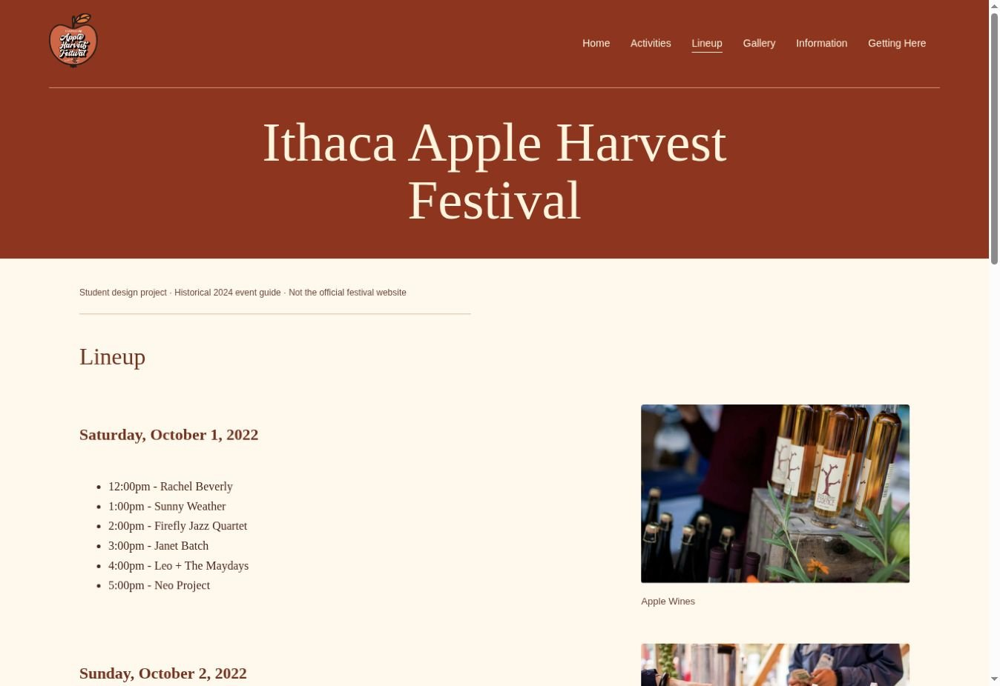
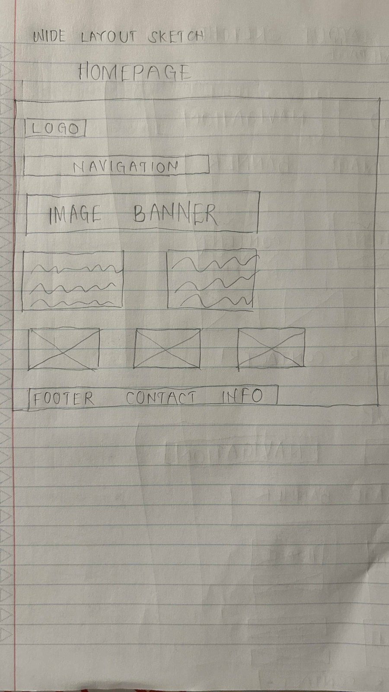
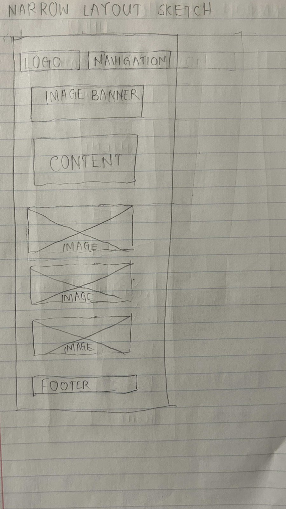

Web design · Front-end development
Apple Harvest Festival
A warm, responsive event guide that connects the festival atmosphere with the details of a visit.

Help someone picture the visit—and plan it.
An event website has to convey the atmosphere while answering practical questions: what is happening, who is there and how to get there. This responsive student project brings those needs into a single festival guide.


Separate the visitor’s questions.
Activities, lineup, gallery, information and directions each have a clear destination in the navigation. The lineup combines time-based information with visual context; the directions page brings transport details and maps together.
Work out the layout at both sizes.
The repository includes wide and narrow layout sketches and iteration artifacts. They show the page hierarchy before implementation: navigation, a large event introduction and supporting content that can stack on smaller screens.




Visual design, responsive layout and front-end behaviour.
Created the page layouts and implemented the HTML, CSS and JavaScript across the guide. The responsive navigation exposes its expanded state and closes with Escape. The tips interaction uses a native dialog and restores focus to its trigger when closed. Instructor-provided content and photography are credited in the source.
A complete event-guide website.
The result is a multi-page, responsive frontend with a consistent visual language and purposeful navigation. It is an archived student design project using historical event material—not the festival’s official or current information service.

Data analysis · Visualization · Interactive storytelling
The McQueen Effect
A closer look at Lewis Hamilton’s career—and the extraordinary baseline behind the decline narrative.
Explore case study →